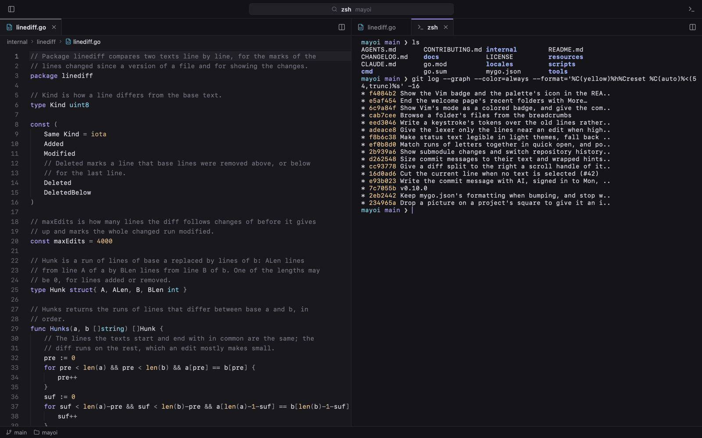
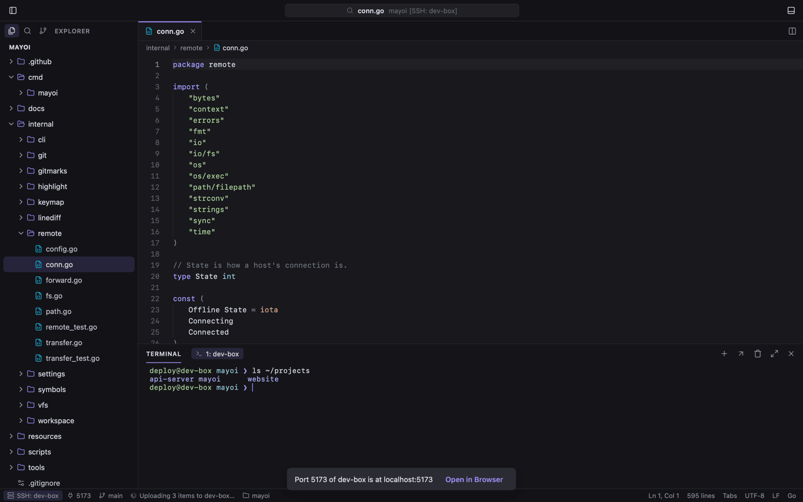
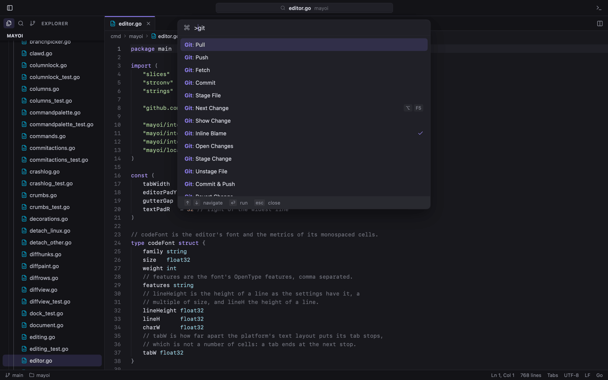
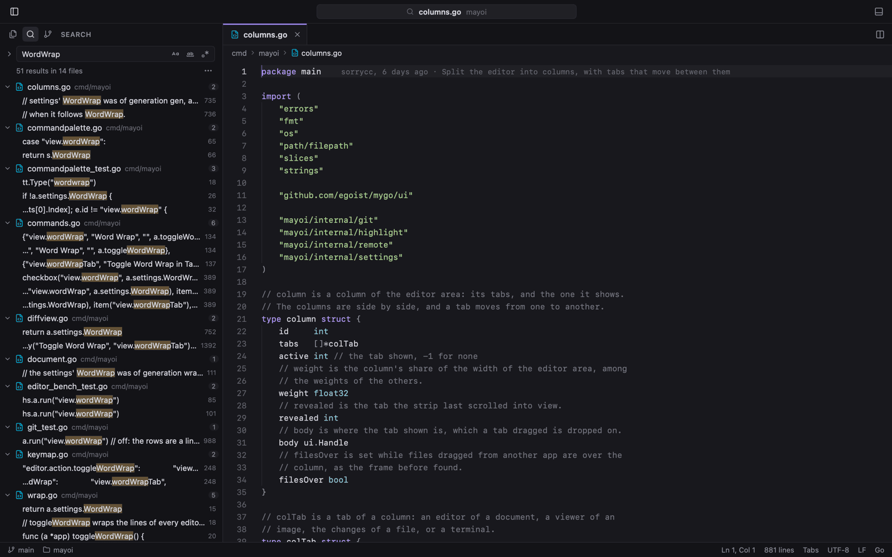
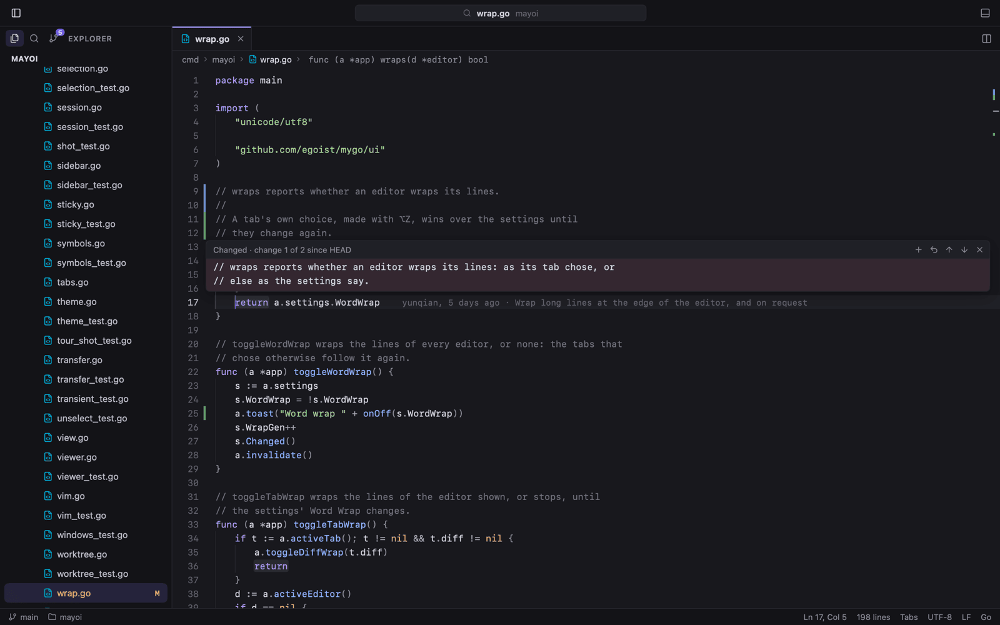
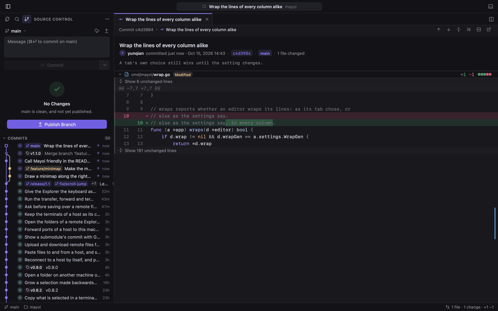
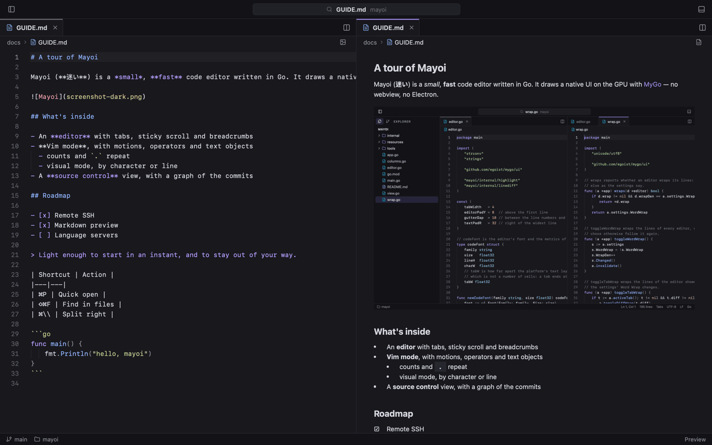
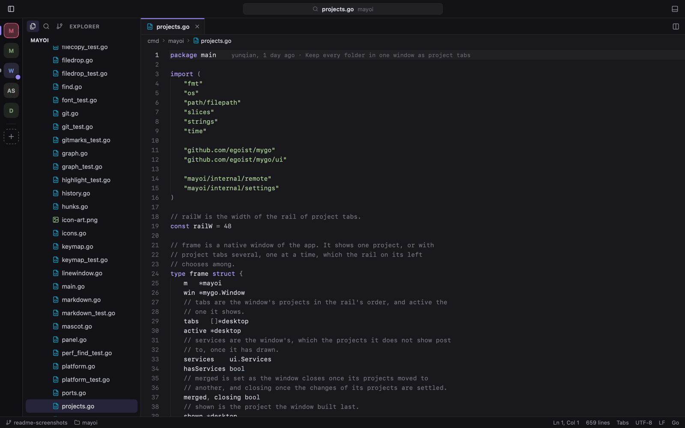

Mayoi draws its whole UI on the GPU in Go. No webview, no Electron — the packaged app is about 18 MB, with Vim mode, Git, a Ghostty terminal and remote SSH built in.
Three columns, a live file tree and the status line — one native window, drawn on the GPU.
mayoi v0.18.2
18 MBthe whole packaged app
0webviews or Electron processes
3platforms: macOS, Linux, Windows
MITopen source, written in Go
UTF-8 · LF · Go
01
Everything you reach for, already inside.
Not a plugin marketplace. The tools a working day needs ship in the binary.
Vim mode that keeps its promises.
Normal, insert and visual modes with motions, operators, text objects and counts. . repeats, registers and macros record, marks jump, and : runs real Ex commands.
motions, operators, text objects, counts
registers, macros and marks
:s, :g and :normal
vim.go — visual mode
Git, from gutter to graph.
Stage, commit, amend, undo, pull and push without leaving the window. Every change in one folded diff, inline or side by side, with changed words tinted.
peek, revert or stage from a gutter mark
commit graph with branches, tags and blame
AI commit messages that leave your secrets out
source control — side by side
The terminal is Ghostty's.
libghostty-vt, the emulator behind Ghostty, in the bottom panel, at the side of the window, or in a tab of its own — beside the code it runs.
panel, side, or its own tab
rename terminals from the tab menu
programs report progress to the project rail
zsh — in a tab

Remote SSH, nothing installed.
Open a folder on another machine through the system's ssh. Explorer, search, Git and terminals run on the host; its ports forward back to your laptop.
reads your ~/.ssh/config
host ports forward to this machine
recent hosts on the welcome page
ssh — dev@buildbox

02
Take the tour.
Six stops, straight from the app's own screenshots. Pick one; the window follows.
mayoi — quick open






Fuzzy files, :42 to a line, @ to a symbol, > to every command with its shortcut.
Case, whole-word and regex across the folder, with include and exclude globs and a preview of every replacement.
Click a gutter mark to see the lines at HEAD, then revert or stage them without opening a diff.
Branches, tags and merges in one graph; each commit's changes open in a tab of their own.
Live beside the source, with the Markdown's Mermaid blocks drawn as diagrams and its LaTeX as formulas.
Every folder in one window, on a rail whose rings show what your programs are working at.
TWELVE THEMES · LIGHT & DARK
Dress it for the hour.
The quiet defaults, The Matrix with digital rain and the White Rabbit, Purple Gold, three Halloweens — and Claude, Qoder, Grok Bot and Cursor. Pick one; the window below wears it live.